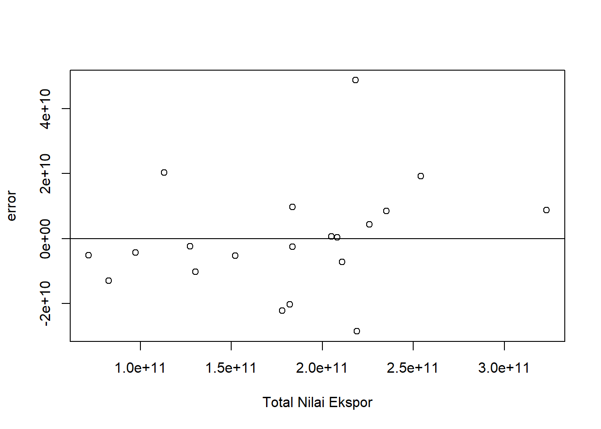
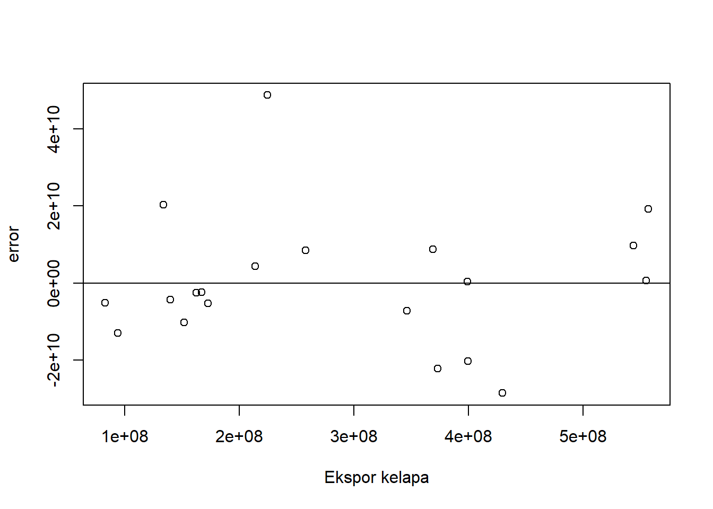
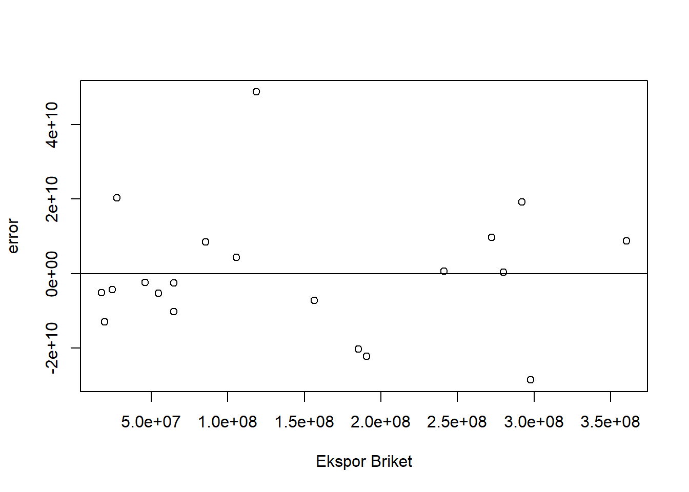
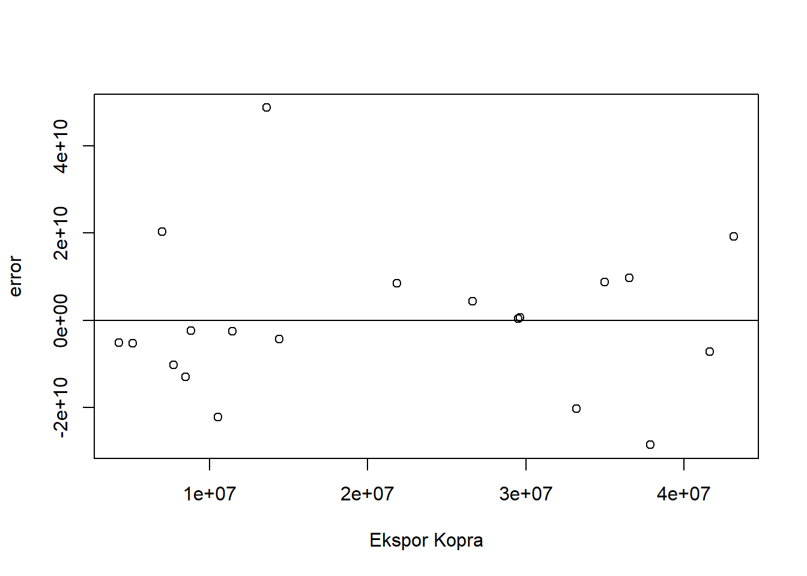
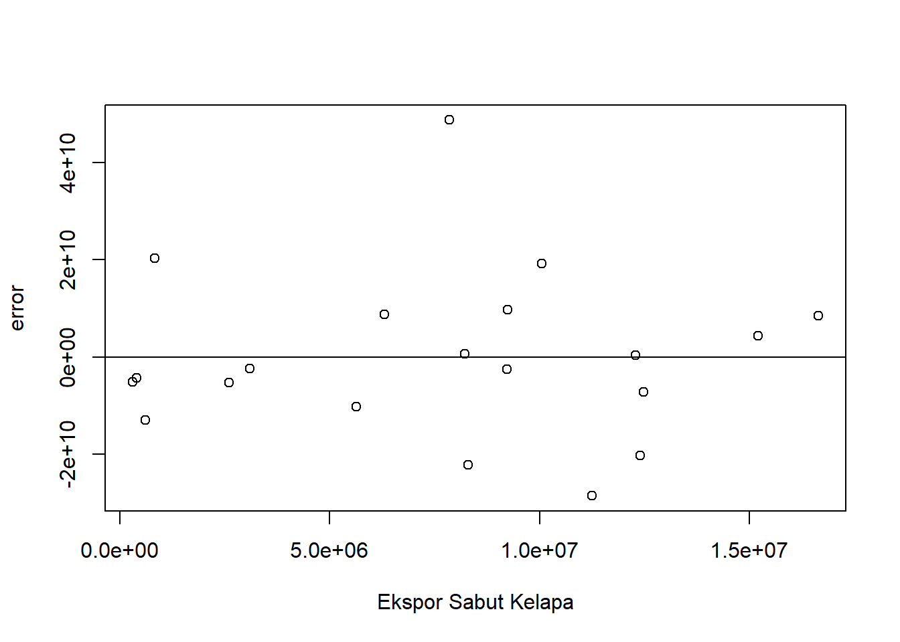
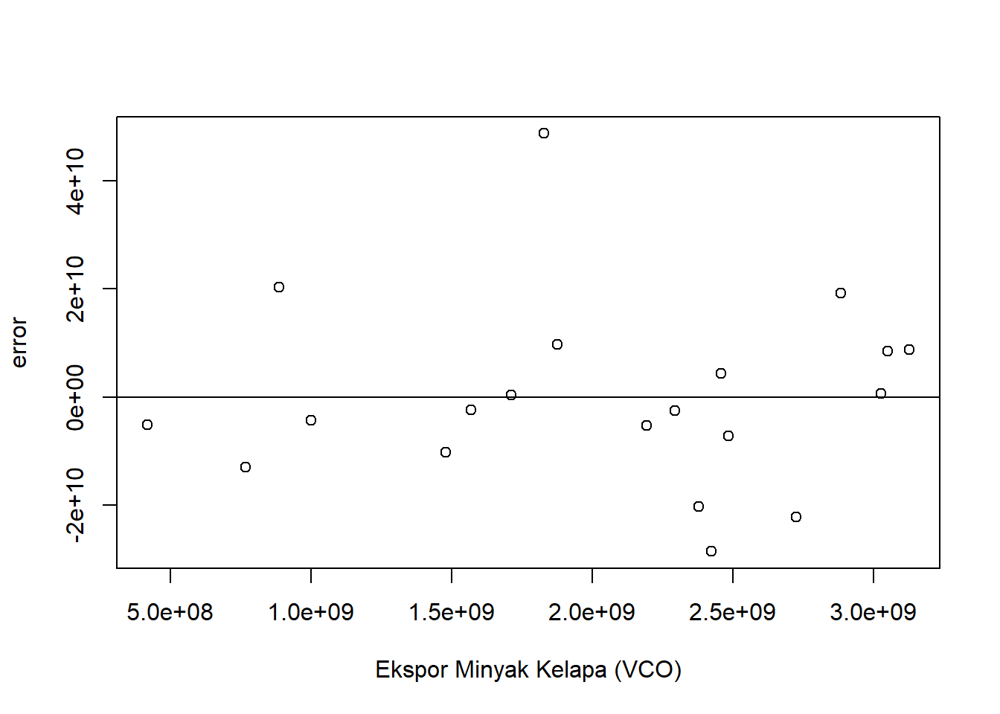

<!DOCTYPE html>
<html xmlns="http://www.w3.org/1999/xhtml" lang="en" xml:lang="en"><head>

<meta charset="utf-8">
<meta name="generator" content="quarto-1.3.450">

<meta name="viewport" content="width=device-width, initial-scale=1.0, user-scalable=yes">

<meta name="author" content="Audry Randiva Aisyah Iskandar">
<meta name="dcterms.date" content="2024-01-09">

<title>Besar Pengaruh Ekspor Kelapa dan turunannya terhadap Ekspor Indonesia.</title>
<style>
code{white-space: pre-wrap;}
span.smallcaps{font-variant: small-caps;}
div.columns{display: flex; gap: min(4vw, 1.5em);}
div.column{flex: auto; overflow-x: auto;}
div.hanging-indent{margin-left: 1.5em; text-indent: -1.5em;}
ul.task-list{list-style: none;}
ul.task-list li input[type="checkbox"] {
  width: 0.8em;
  margin: 0 0.8em 0.2em -1em; /* quarto-specific, see https://github.com/quarto-dev/quarto-cli/issues/4556 */ 
  vertical-align: middle;
}
/* CSS for syntax highlighting */
pre > code.sourceCode { white-space: pre; position: relative; }
pre > code.sourceCode > span { display: inline-block; line-height: 1.25; }
pre > code.sourceCode > span:empty { height: 1.2em; }
.sourceCode { overflow: visible; }
code.sourceCode > span { color: inherit; text-decoration: inherit; }
div.sourceCode { margin: 1em 0; }
pre.sourceCode { margin: 0; }
@media screen {
div.sourceCode { overflow: auto; }
}
@media print {
pre > code.sourceCode { white-space: pre-wrap; }
pre > code.sourceCode > span { text-indent: -5em; padding-left: 5em; }
}
pre.numberSource code
  { counter-reset: source-line 0; }
pre.numberSource code > span
  { position: relative; left: -4em; counter-increment: source-line; }
pre.numberSource code > span > a:first-child::before
  { content: counter(source-line);
    position: relative; left: -1em; text-align: right; vertical-align: baseline;
    border: none; display: inline-block;
    -webkit-touch-callout: none; -webkit-user-select: none;
    -khtml-user-select: none; -moz-user-select: none;
    -ms-user-select: none; user-select: none;
    padding: 0 4px; width: 4em;
  }
pre.numberSource { margin-left: 3em;  padding-left: 4px; }
div.sourceCode
  {   }
@media screen {
pre > code.sourceCode > span > a:first-child::before { text-decoration: underline; }
}
</style>


<script src="index_files/libs/clipboard/clipboard.min.js"></script>
<script src="index_files/libs/quarto-html/quarto.js"></script>
<script src="index_files/libs/quarto-html/popper.min.js"></script>
<script src="index_files/libs/quarto-html/tippy.umd.min.js"></script>
<script src="index_files/libs/quarto-html/anchor.min.js"></script>
<link href="index_files/libs/quarto-html/tippy.css" rel="stylesheet">
<link href="index_files/libs/quarto-html/quarto-syntax-highlighting.css" rel="stylesheet" id="quarto-text-highlighting-styles">
<script src="index_files/libs/bootstrap/bootstrap.min.js"></script>
<link href="index_files/libs/bootstrap/bootstrap-icons.css" rel="stylesheet">
<link href="index_files/libs/bootstrap/bootstrap.min.css" rel="stylesheet" id="quarto-bootstrap" data-mode="light">

<script src="index_files/libs/kePrint-0.0.1/kePrint.js"></script>
<link href="index_files/libs/lightable-0.0.1/lightable.css" rel="stylesheet">

  <script src="https://polyfill.io/v3/polyfill.min.js?features=es6"></script>
  <script src="https://cdn.jsdelivr.net/npm/mathjax@3/es5/tex-chtml-full.js" type="text/javascript"></script>

</head>

<body>

<div id="quarto-content" class="page-columns page-rows-contents page-layout-article">
<div id="quarto-margin-sidebar" class="sidebar margin-sidebar">
<div class="quarto-alternate-formats"><h2>Other Formats</h2><ul><li><a href="index.docx"><i class="bi bi-file-word"></i>MS Word</a></li></ul></div></div>
<main class="content" id="quarto-document-content">

<header id="title-block-header" class="quarto-title-block default">
<div class="quarto-title">
<h1 class="title">Besar Pengaruh Ekspor Kelapa dan turunannya terhadap Ekspor Indonesia.</h1>
<p class="subtitle lead">Metode Penelitian Politeknik APP Jakarta</p>
</div>


<div class="quarto-title-meta">

    <div>
    <div class="quarto-title-meta-heading">Author</div>
    <div class="quarto-title-meta-contents">
             <p>Audry Randiva Aisyah Iskandar </p>
          </div>
  </div>
    
    <div>
    <div class="quarto-title-meta-heading">Published</div>
    <div class="quarto-title-meta-contents">
      <p class="date">January 9, 2024</p>
    </div>
  </div>
  
    
  </div>
  

</header>

<p></p>
<section id="pendahuluan" class="level2" data-number="1">
<h2 data-number="1" class="anchored" data-anchor-id="pendahuluan"><span class="header-section-number">1</span> Pendahuluan</h2>
<section id="latar-belakang" class="level3" data-number="1.1">
<h3 data-number="1.1" class="anchored" data-anchor-id="latar-belakang"><span class="header-section-number">1.1</span> Latar belakang</h3>
<p>Indonesia, sebagai produsen kelapa terbesar di dunia, memiliki peran penting dalam ekonomi global, khususnya dalam sektor ekspor. Komoditas kelapa dan turunannya seperti kopra, briket, dan sabut kelapa, berkontribusi signifikan terhadap total nilai ekspor Indonesia. Kelapa, sebagai komoditas utama, berkontribusi dalam penerimaan devisa negara, penyediaan lapangan kerja, pemenuhan kebutuhan konsumsi dalam negeri, dan bahan baku berbagai industri dalam negeri. Ekspor kelapa terbesar berasal dari produk turunan berupa minyak kelapa setengah jadi dengan kontribusi 384 juta dolar AS atau 30,21 persen dari total ekspor komoditas kelapa Indonesia.</p>
<p>Selain itu, kopra juga memiliki peran penting dalam ekspor Indonesia. Pada tahun 2020, Indonesia berhasil mengekspor kopra sebesar 705 ribu ton senilai USD 220,6 juta. Sebanyak tujuh puluh persen dari total ekspor kopra Indonesia didistribusikan ke India, yang merupakan negara pengimpor utama kopra Indonesia.</p>
<p>Briket arang kelapa Indonesia juga memiliki potensi ekspor yang besar karena kualitas produknya. Pada tahun 2018, ekspor arang kelapa Indonesia mencapai 200,1 ribu ton dengan nilai ekspor mencapai USD 155,6 juta. Dengan demikian, dapat dilihat bahwa ekspor komoditas kelapa dan turunannya memiliki pengaruh signifikan terhadap total nilai ekspor Indonesia.</p>
<p>Namun, sejauh mana pengaruh ekspor komoditas kelapa dan turunannya terhadap total nilai ekspor Indonesia masih belum jelas. Oleh karena itu, penelitian ini bertujuan untuk menganalisis pengaruh ekspor komoditas kelapa dan turunannya terhadap total nilai ekspor Indonesia menggunakan metode regresi linear berganda. Metode ini memungkinkan kita untuk memahami hubungan antara variabel dependen (total nilai ekspor Indonesia) dan variabel independen (ekspor komoditas kelapa dan turunannya) dengan lebih baik. Penelitian ini diharapkan dapat memberikan wawasan baru tentang pentingnya komoditas kelapa dan turunannya dalam ekonomi Indonesia.</p>
</section>
<section id="ruang-lingkup" class="level3" data-number="1.2">
<h3 data-number="1.2" class="anchored" data-anchor-id="ruang-lingkup"><span class="header-section-number">1.2</span> Ruang lingkup</h3>
<p>Ruang lingkup penelitian ini mencakup:</p>
<ol type="1">
<li><p><strong>Analisis Ekspor Komoditas Kelapa</strong>: Penelitian ini akan menganalisis data ekspor komoditas kelapa dan turunannya dari Indonesia, termasuk kopra, briket, dan sabut kelapa. Analisis ini akan mencakup volume dan nilai ekspor, serta pasar ekspor utama.</p></li>
<li><p><strong>Pengaruh terhadap Total Nilai Ekspor Indonesia</strong>: Fokus utama penelitian ini adalah untuk menentukan sejauh mana ekspor komoditas kelapa dan turunannya mempengaruhi total nilai ekspor Indonesia. Ini akan dilakukan dengan membandingkan data ekspor komoditas kelapa dan turunannya dengan data total nilai ekspor Indonesia.</p></li>
<li><p><strong>Metode Regresi Linear Berganda</strong>: Penelitian ini akan menggunakan metode regresi linear berganda untuk menganalisis data. Metode ini memungkinkan penelitian untuk memahami hubungan antara variabel dependen (total nilai ekspor Indonesia) dan variabel independen (ekspor komoditas kelapa dan turunannya).</p></li>
<li><p><strong>Periode Waktu</strong>: Penelitian ini akan mencakup data ekspor dari periode waktu tertentu. Periode waktu ini akan ditentukan berdasarkan ketersediaan data.</p></li>
</ol>
</section>
<section id="rumusan-masalah" class="level3" data-number="1.3">
<h3 data-number="1.3" class="anchored" data-anchor-id="rumusan-masalah"><span class="header-section-number">1.3</span> Rumusan masalah</h3>
<p>Berikut adalah rumusan masalah yang dapat diangkat dari latar belakang penelitian:</p>
<ol type="1">
<li><p>Bagaimana pengaruh ekspor komoditas kelapa terhadap total nilai ekspor Indonesia?</p></li>
<li><p>Bagaimana pengaruh ekspor kopra terhadap total nilai ekspor Indonesia?</p></li>
<li><p>Bagaimana pengaruh ekspor briket arang kelapa terhadap total nilai ekspor Indonesia?</p></li>
<li><p>Bagaimana pengaruh ekspor sabut kelapa terhadap total nilai ekspor Indonesia?</p></li>
<li><p>Apakah ada perbedaan signifikan dalam pengaruh ekspor komoditas kelapa dan turunannya terhadap total nilai ekspor Indonesia?</p></li>
</ol>
<p>Rumusan masalah ini akan dijawab melalui analisis data ekspor menggunakan metode regresi linear berganda. Penelitian ini diharapkan dapat memberikan pemahaman yang lebih baik tentang pengaruh ekspor komoditas kelapa dan turunannya terhadap total nilai ekspor Indonesia.</p>
</section>
<section id="tujuan-dan-manfaat-penelitian" class="level3" data-number="1.4">
<h3 data-number="1.4" class="anchored" data-anchor-id="tujuan-dan-manfaat-penelitian"><span class="header-section-number">1.4</span> Tujuan dan manfaat penelitian</h3>
<p>Berikut adalah tujuan dan manfaat dari penelitian ini:</p>
<p><strong>Tujuan Penelitian:</strong></p>
<ol type="1">
<li><p>Untuk mengetahui pengaruh ekspor komoditas kelapa terhadap total nilai ekspor Indonesia.</p></li>
<li><p>Untuk mengetahui pengaruh ekspor kopra terhadap total nilai ekspor Indonesia.</p></li>
<li><p>Untuk mengetahui pengaruh ekspor briket arang kelapa terhadap total nilai ekspor Indonesia.</p></li>
<li><p>Untuk mengetahui pengaruh ekspor sabut kelapa terhadap total nilai ekspor Indonesia.</p></li>
<li><p>Untuk mengetahui perbedaan signifikan dalam pengaruh ekspor komoditas kelapa dan turunannya terhadap total nilai ekspor Indonesia.</p></li>
</ol>
<p><strong>Manfaat Penelitian:</strong></p>
<ol type="1">
<li><p><strong>Akademis</strong>: Hasil penelitian ini dapat menjadi referensi bagi penelitian selanjutnya yang berkaitan dengan ekspor komoditas kelapa dan turunannya.</p></li>
<li><p><strong>Pemerintah</strong>: Hasil penelitian ini dapat menjadi bahan pertimbangan dalam membuat kebijakan ekspor, khususnya terkait dengan komoditas kelapa dan turunannya.</p></li>
<li><p><strong>Masyarakat</strong>: Hasil penelitian ini dapat memberikan pemahaman kepada masyarakat tentang pentingnya komoditas kelapa dan turunannya dalam perekonomian Indonesia, khususnya dalam sektor ekspor.</p></li>
</ol>
</section>
<section id="package" class="level3" data-number="1.5">
<h3 data-number="1.5" class="anchored" data-anchor-id="package"><span class="header-section-number">1.5</span> Package</h3>
<div class="cell">
<div class="sourceCode cell-code" id="cb1"><pre class="sourceCode r code-with-copy"><code class="sourceCode r"><span id="cb1-1"><a href="#cb1-1" aria-hidden="true" tabindex="-1"></a><span class="fu">setwd</span>(<span class="st">"D:/METOPEL UAS/AUDRY METOPEL"</span>)</span>
<span id="cb1-2"><a href="#cb1-2" aria-hidden="true" tabindex="-1"></a><span class="fu">library</span>(readxl)</span>
<span id="cb1-3"><a href="#cb1-3" aria-hidden="true" tabindex="-1"></a><span class="fu">library</span>(tidyverse)</span>
<span id="cb1-4"><a href="#cb1-4" aria-hidden="true" tabindex="-1"></a><span class="fu">library</span>(kableExtra)</span></code><button title="Copy to Clipboard" class="code-copy-button"><i class="bi"></i></button></pre></div>
</div>
</section>
</section>
<section id="studi-pustaka" class="level2" data-number="2">
<h2 data-number="2" class="anchored" data-anchor-id="studi-pustaka"><span class="header-section-number">2</span> Studi pustaka</h2>
<p>Kelapa atau yang memiliki nama latin Cocos Nucifera adalah tanaman hasil perkebunan yang banyak ditemui di seluruh wilayah Indonesia. Struktur buah kelapa terdiri dari sabut (35%), tempurung (12%), air kelapa (15%), tempurung (12%) serta bagian lain seperti tongkol buah, lembaga, kulit luar serta testa). Hampir seluruh komponen pada kelapa bisa dimanfaatkan, namun daging buah kelapa menjadi bagian yang paling banyak digunakan sebagai bahan makanan maupun bahan baku dalam industri (Setiaji, B., 2006 dalam Putri, P.M dan Da Rato, Y.Y,. 2022).</p>
<p>Industri kelapa skala kecil dalam setiap proses produksinya menghasilkan buangan atau hasil samping yang tidak digunakan sehingga menjadi limbah. Limbah padat yang dihasilkan yaitu berupa tempurung kelapa, sabut kelapa, blondo serta ampas kelapa. Sedangkan, limbah cair dari industri kelapa dapat bersumber dari air kelapa, air sisa pembuatan VCO serta air sisa pencucian alat maupun bahan (Sulistyorini, J., dkk, 2020). Sulistyorini, J., Sukron, A., Pojoh, B., &amp; Sjarif, S. R. 2020. “Penerapan Sistim Produksi Bersih Di Sentra Ikm Kelapa Terpadu Kota Bitung.” Jurnal Penelitian Teknologi Industri 12(1): 41–51.</p>
<p>Objek penelitian ini adalah Industri Komoditas Kelapa dan juga turunannya dimana data yang diperlukan untuk memberi gambaran lengkap mengenai objek dan variabel yang berkenaan dengan objek yang diteliti diperoleh dari data sekunder seperti buku, jurnal, serta literatur-literatur kepustakaan lainnya. Menurut Dewi, Z. R. A. T., dkk (2015) studi literatur ialah informasi dan pengumpulan data yang dilakukan dengan cara mengumpulkan pengetahuan dari berbagai sumber seperti karya tulis, buku, catatan maupun sumber lain yang berkenaan dengan objek yang akan diteliti.</p>
<p>Ekspor adalah suatu kegiatan ekonomi menjual produk dalam negeri ke pasar di luar negeri, sedangkan impor merupakan kegiatan ekonomi membeli produk luar negeri untuk keperluan atau dipasarkan di dalam negeri (Murni,2009:208).</p>
<p>Suatu negara melakukan kegiatan ekspor karena untuk memenuhi kebutuhan barang dan jasa Negara lain. Keuntungan melakukan ekspor menurut Sukirno (2010:205) adalah:</p>
<ol type="a">
<li><p>Memperluas Pasar Kegiatan ekspor merupakan cara untuk memasarkan produk-produk dalam negeri ke luar negeri. Adanya kegiatan ekspor, produk yang dihasilkan di dalam negeri tidak hanya dikonsumsi oleh penduduk dalam negeri.</p></li>
<li><p>Menambah Devisa Negara Kegiatan ekspor memugkinkan eksportir dalam negeri memasarkan produknya ke luar negeri. Transaksi ekspor ini dapat menambah devisa Negara yang merupakan salah satu sumber penerimaan Negara.</p></li>
<li><p>Memperluas Lapangan Kerja Kegiatan ekspor akan membuka lapangan pekerjaan bagi masyarakat. Dengan semakin banyaknya ekspor maka produksi yang dihasilkan akan semakin banyak. Peningkatan jumlah produksi ini akan meningkatkan penyerapan tenaga kerja.</p></li>
</ol>
<p>“Exports are domestically produced goods and services that are sold abroad”, Ekspor mempunyai peran strategis, terlebih dalam memberikan kontribusi terhadap pembangunan ekonomi suatu negara dan cadangan devisa negara’’, (Mankiw, 2012:272).</p>
<p>Nilai ekspansi ekspor juga menentukan besaran penyerapakan tenaga kerja. Ketika nilai ekspor meningkat, dapat diartikan permintaan barang dari negara lain mengalami peningkatan. Jika ekspor menurun sebaliknya dapat diartikan permintaan negara lain terhadap barang ekspor mengalami pelemahan. Ekspor merupakan injeksi masuknya aliran pendapatan seperti halnya investasi.</p>
<p>Sumberdaya ikan pelagis besar di Wilayah Pengelolaan Perikanan (WPP) 573 merupakan salah satu komoditas penting perikanan Indonesia yang sudah dieksploitasi sejak lama. Tuna sirip kuning (Thunnus albacares) merupakan hasil tangkapan terbanyak dibandingkan dengan jenis tuna lainnya di Indonesia. Hasil tangkapan tuna di Indonesia secara keseluruhan pada kurun waktu 2004 hingga 2011 mencapai 1.297.062 ton, dari jumlah ini sebanyak 69% hasil tangkapan adalah tuna sirip kuning (Direktorat Jenderal Perikanan Tangkap, 2012).</p>
<p>Tingginya permintaan tuna sirip kuning di pasar dunia dalam beberapa tahun terakhir berdampak terhadap pemanfaatan yang makin intensif. Hal ini membuat ketersediaan stok tuna sirip kuning (yellowfin tuna) di Samudra Hindia diperkirakan pada saat ini, dalam keadaan lebih tangkap (IOTC, 2016).</p>
<p>Kondisi ini akan menjadi lebih buruk lagi jika sumber daya ini tidak dikelola dengan lebih baik. Oleh karena itu, pengelolaan secara tepat dan bertanggungjawab penting dilakukan untuk melindungi spesies tuna. Salah satunya dengan mengkaji alat tangkap yang digunakan.</p>
<p>Tuna sirip kuning merupakan salah satu hasil tangkapan utama dari nelayan pancing ulur yang beroperasi di perairan sekitar rumpon Muhammad &amp; Barata, (2012).</p>
</section>
<section id="metode-penelitian" class="level2" data-number="3">
<h2 data-number="3" class="anchored" data-anchor-id="metode-penelitian"><span class="header-section-number">3</span> Metode penelitian</h2>
<section id="data" class="level3" data-number="3.1">
<h3 data-number="3.1" class="anchored" data-anchor-id="data"><span class="header-section-number">3.1</span> Data</h3>
<table class="table">
<colgroup>
<col style="width: 14%">
<col style="width: 14%">
<col style="width: 14%">
<col style="width: 14%">
<col style="width: 14%">
<col style="width: 14%">
<col style="width: 14%">
</colgroup>
<thead>
<tr class="header">
<th>tahun</th>
<th>ekspor</th>
<th>kelapa</th>
<th>briket</th>
<th>kopra</th>
<th>sabut</th>
<th>minyak</th>
</tr>
</thead>
<tbody>
<tr class="odd">
<td>2003</td>
<td>$ 71.553.141.044,99</td>
<td>$ 83.054.000,00</td>
<td>$ 17.568.000,00</td>
<td>$ 4.281.000,00</td>
<td>$ 300.000,00</td>
<td>$ 418.286.000,00</td>
</tr>
<tr class="even">
<td>2004</td>
<td>$ 82.744.351.781,02</td>
<td>$ 94.429.000,00</td>
<td>$ 19.583.000,00</td>
<td>$ 8.511.000,00</td>
<td>$ 599.000,00</td>
<td>$ 767.624.000,00</td>
</tr>
<tr class="odd">
<td>2005</td>
<td>$ 97.387.627.566,00</td>
<td>$ 140.202.000,00</td>
<td>$ 24.501.000,00</td>
<td>$ 14.417.000,00</td>
<td>$ 392.000,00</td>
<td>$ 1.001.508.000,00</td>
</tr>
<tr class="even">
<td>2006</td>
<td>$ 113.143.425.287,80</td>
<td>$ 134.032.000,00</td>
<td>$ 27.730.000,00</td>
<td>$ 7.016.000,00</td>
<td>$ 833.000,00</td>
<td>$ 887.149.000,00</td>
</tr>
<tr class="odd">
<td>2007</td>
<td>$ 127.226.102.177,01</td>
<td>$ 167.306.000,00</td>
<td>$ 46.104.000,00</td>
<td>$ 8.821.000,00</td>
<td>$ 3.098.000,00</td>
<td>$ 1.568.215.000,00</td>
</tr>
<tr class="even">
<td>2008</td>
<td>$ 152.090.401.421,80</td>
<td>$ 172.815.000,00</td>
<td>$ 54.793.000,00</td>
<td>$ 5.149.000,00</td>
<td>$ 2.605.000,00</td>
<td>$ 2.193.091.000,00</td>
</tr>
<tr class="odd">
<td>2009</td>
<td>$ 130.357.798.591,19</td>
<td>$ 151.912.000,00</td>
<td>$ 64.854.000,00</td>
<td>$ 7.733.000,00</td>
<td>$ 5.631.000,00</td>
<td>$ 1.479.158.000,00</td>
</tr>
<tr class="even">
<td>2010</td>
<td>$ 183.480.562.961,19</td>
<td>$ 162.545.000,00</td>
<td>$ 64.920.000,00</td>
<td>$ 11.451.000,00</td>
<td>$ 9.223.000,00</td>
<td>$ 2.293.761.000,00</td>
</tr>
<tr class="odd">
<td>2011</td>
<td>$ 235.095.129.135,96</td>
<td>$ 257.951.000,00</td>
<td>$ 85.707.000,00</td>
<td>$ 21.863.000,00</td>
<td>$ 16.644.000,00</td>
<td>$ 3.051.634.000,00</td>
</tr>
<tr class="even">
<td>2012</td>
<td>$ 225.744.403.267,74</td>
<td>$ 213.960.000,00</td>
<td>$ 105.786.000,00</td>
<td>$ 26.637.000,00</td>
<td>$ 15.206.000,00</td>
<td>$ 2.458.230.000,00</td>
</tr>
<tr class="odd">
<td>2013</td>
<td>$ 218.308.408.831,08</td>
<td>$ 224.822.000,00</td>
<td>$ 118.781.000,00</td>
<td>$ 13.603.000,00</td>
<td>$ 7.854.000,00</td>
<td>$ 1.829.519.000,00</td>
</tr>
<tr class="even">
<td>2014</td>
<td>$ 210.820.082.828,47</td>
<td>$ 346.571.000,00</td>
<td>$ 156.524.000,00</td>
<td>$ 41.627.000,00</td>
<td>$ 12.474.000,00</td>
<td>$ 2.484.350.000,00</td>
</tr>
<tr class="odd">
<td>2015</td>
<td>$ 182.158.298.804,88</td>
<td>$ 399.362.000,00</td>
<td>$ 185.283.000,00</td>
<td>$ 33.214.000,00</td>
<td>$ 12.402.000,00</td>
<td>$ 2.378.262.000,00</td>
</tr>
<tr class="even">
<td>2016</td>
<td>$ 177.886.012.743,86</td>
<td>$ 373.433.000,00</td>
<td>$ 190.555.000,00</td>
<td>$ 10.562.000,00</td>
<td>$ 8.301.000,00</td>
<td>$ 2.726.686.000,00</td>
</tr>
<tr class="odd">
<td>2017</td>
<td>$ 204.924.485.909,91</td>
<td>$ 554.973.000,00</td>
<td>$ 241.267.000,00</td>
<td>$ 29.641.000,00</td>
<td>$ 8.220.000,00</td>
<td>$ 3.028.314.000,00</td>
</tr>
<tr class="even">
<td>2018</td>
<td>$ 218.905.647.884,81</td>
<td>$ 429.614.000,00</td>
<td>$ 297.801.000,00</td>
<td>$ 37.892.000,00</td>
<td>$ 11.250.000,00</td>
<td>$ 2.424.405.000,00</td>
</tr>
<tr class="odd">
<td>2019</td>
<td>$ 208.057.763.662,38</td>
<td>$ 399.027.000,00</td>
<td>$ 280.104.000,00</td>
<td>$ 29.525.000,00</td>
<td>$ 12.292.000,00</td>
<td>$ 1.711.900.000,00</td>
</tr>
<tr class="even">
<td>2020</td>
<td>$ 183.546.577.015,85</td>
<td>$ 544.110.000,00</td>
<td>$ 272.200.000,00</td>
<td>$ 36.545.000,00</td>
<td>$ 9.239.000,00</td>
<td>$ 1.877.160.000,00</td>
</tr>
<tr class="odd">
<td>2021</td>
<td>$ 254.008.548.673,18</td>
<td>$ 556.848.000,00</td>
<td>$ 291.961.000,00</td>
<td>$ 43.146.000,00</td>
<td>$ 10.046.000,00</td>
<td>$ 2.885.387.000,00</td>
</tr>
<tr class="even">
<td>2022</td>
<td>$ 323.079.953.659,96</td>
<td>$ 368.857.000,00</td>
<td>$ 360.325.000,00</td>
<td>$ 34.997.000,00</td>
<td>$ 6.304.000,00</td>
<td>$ 3.127.463.000,00</td>
</tr>
</tbody>
</table>
<p>Penelitian ini menggunakan data time series yang kemudian diproses menggunakan metode regresi multivariat untuk melihat hubungan antara besaran nilai ekspor komoditas buah kelapa beserta dengan turunannya terhadap total nilai ekspor Indonesia.</p>
</section>
<section id="metode-analisis" class="level3" data-number="3.2">
<h3 data-number="3.2" class="anchored" data-anchor-id="metode-analisis"><span class="header-section-number">3.2</span> Metode analisis</h3>
<p>Metode yang dipilih adalah regresi Multivariat dengan lebih dari satu variabel independen. Dimana kita mencari seberapa besar pengaruh ekspor kelapa dan turunannya terhadap total ekspor Indonesia. Spesifikasi yang dilakukan adalah:</p>
<p><span class="math display">\[
Y=\beta_0 + \beta_1 X1+\beta_2 X2+\beta_3 X3+\beta_4 X4+\beta_5 X5+\mu.
\]</span> di mana <span class="math inline">\(Y\)</span>=Nilai Total Ekspor, <span class="math inline">\(X1\)</span> = Ekspor Kelapa, <span class="math inline">\(X2\)</span> = Ekspor Briket Kelapa, <span class="math inline">\(X3\)</span> = Ekspor KopraKelapa, <span class="math inline">\(X4\)</span> = Ekspor Serabut Kelapa, dan <span class="math inline">\(X5\)</span> = Ekspor Minyak Kelapa (VCO).</p>
</section>
</section>
<section id="pembahasan" class="level2" data-number="4">
<h2 data-number="4" class="anchored" data-anchor-id="pembahasan"><span class="header-section-number">4</span> Pembahasan</h2>
<section id="pembahasan-masalah" class="level3" data-number="4.1">
<h3 data-number="4.1" class="anchored" data-anchor-id="pembahasan-masalah"><span class="header-section-number">4.1</span> Pembahasan masalah</h3>
<section id="plot-dan-data" class="level4" data-number="4.1.1">
<h4 data-number="4.1.1" class="anchored" data-anchor-id="plot-dan-data"><span class="header-section-number">4.1.1</span> Plot dan Data</h4>
<div class="cell">
<div class="sourceCode cell-code" id="cb2"><pre class="sourceCode r code-with-copy"><code class="sourceCode r"><span id="cb2-1"><a href="#cb2-1" aria-hidden="true" tabindex="-1"></a><span class="co">#impor dataset</span></span>
<span id="cb2-2"><a href="#cb2-2" aria-hidden="true" tabindex="-1"></a><span class="fu">read_excel</span>(<span class="st">"kelapa.xlsx"</span>)</span></code><button title="Copy to Clipboard" class="code-copy-button"><i class="bi"></i></button></pre></div>
<div class="cell-output cell-output-stdout">
<pre><code># A tibble: 20 × 7
   tahun        ekspor    kelapa    briket    kopra    sabut     minyak
   &lt;dbl&gt;         &lt;dbl&gt;     &lt;dbl&gt;     &lt;dbl&gt;    &lt;dbl&gt;    &lt;dbl&gt;      &lt;dbl&gt;
 1  2003  71553141045.  83054000  17568000  4281000   300000  418286000
 2  2004  82744351781.  94429000  19583000  8511000   599000  767624000
 3  2005  97387627566. 140202000  24501000 14417000   392000 1001508000
 4  2006 113143425288. 134032000  27730000  7016000   833000  887149000
 5  2007 127226102177. 167306000  46104000  8821000  3098000 1568215000
 6  2008 152090401422. 172815000  54793000  5149000  2605000 2193091000
 7  2009 130357798591. 151912000  64854000  7733000  5631000 1479158000
 8  2010 183480562961. 162545000  64920000 11451000  9223000 2293761000
 9  2011 235095129136. 257951000  85707000 21863000 16644000 3051634000
10  2012 225744403268. 213960000 105786000 26637000 15206000 2458230000
11  2013 218308408831. 224822000 118781000 13603000  7854000 1829519000
12  2014 210820082828. 346571000 156524000 41627000 12474000 2484350000
13  2015 182158298805. 399362000 185283000 33214000 12402000 2378262000
14  2016 177886012744. 373433000 190555000 10562000  8301000 2726686000
15  2017 204924485910. 554973000 241267000 29641000  8220000 3028314000
16  2018 218905647885. 429614000 297801000 37892000 11250000 2424405000
17  2019 208057763662. 399027000 280104000 29525000 12292000 1711900000
18  2020 183546577016. 544110000 272200000 36545000  9239000 1877160000
19  2021 254008548673. 556848000 291961000 43146000 10046000 2885387000
20  2022 323079953660. 368857000 360325000 34997000  6304000 3127463000</code></pre>
</div>
<div class="sourceCode cell-code" id="cb4"><pre class="sourceCode r code-with-copy"><code class="sourceCode r"><span id="cb4-1"><a href="#cb4-1" aria-hidden="true" tabindex="-1"></a>dat <span class="ot">&lt;-</span> <span class="fu">read_excel</span>(<span class="st">"kelapa.xlsx"</span>)</span>
<span id="cb4-2"><a href="#cb4-2" aria-hidden="true" tabindex="-1"></a><span class="fu">kbl</span>(dat) <span class="sc">%&gt;%</span></span>
<span id="cb4-3"><a href="#cb4-3" aria-hidden="true" tabindex="-1"></a>  <span class="fu">kable_styling</span>(<span class="at">bootstrap_options =</span> <span class="fu">c</span>(<span class="st">"striped"</span>, <span class="st">"hover"</span>, <span class="st">"condensed"</span>, <span class="st">"responsive"</span>))</span></code><button title="Copy to Clipboard" class="code-copy-button"><i class="bi"></i></button></pre></div>
<div class="cell-output-display">
<div class="table-responsive">
<table class="table table-striped table-hover table-condensed table-sm small" data-quarto-postprocess="true">
<thead>
<tr class="header">
<th style="text-align: right;" data-quarto-table-cell-role="th">tahun</th>
<th style="text-align: right;" data-quarto-table-cell-role="th">ekspor</th>
<th style="text-align: right;" data-quarto-table-cell-role="th">kelapa</th>
<th style="text-align: right;" data-quarto-table-cell-role="th">briket</th>
<th style="text-align: right;" data-quarto-table-cell-role="th">kopra</th>
<th style="text-align: right;" data-quarto-table-cell-role="th">sabut</th>
<th style="text-align: right;" data-quarto-table-cell-role="th">minyak</th>
</tr>
</thead>
<tbody>
<tr class="odd">
<td style="text-align: right;">2003</td>
<td style="text-align: right;">71553141045</td>
<td style="text-align: right;">83054000</td>
<td style="text-align: right;">17568000</td>
<td style="text-align: right;">4281000</td>
<td style="text-align: right;">300000</td>
<td style="text-align: right;">418286000</td>
</tr>
<tr class="even">
<td style="text-align: right;">2004</td>
<td style="text-align: right;">82744351781</td>
<td style="text-align: right;">94429000</td>
<td style="text-align: right;">19583000</td>
<td style="text-align: right;">8511000</td>
<td style="text-align: right;">599000</td>
<td style="text-align: right;">767624000</td>
</tr>
<tr class="odd">
<td style="text-align: right;">2005</td>
<td style="text-align: right;">97387627566</td>
<td style="text-align: right;">140202000</td>
<td style="text-align: right;">24501000</td>
<td style="text-align: right;">14417000</td>
<td style="text-align: right;">392000</td>
<td style="text-align: right;">1001508000</td>
</tr>
<tr class="even">
<td style="text-align: right;">2006</td>
<td style="text-align: right;">113143425288</td>
<td style="text-align: right;">134032000</td>
<td style="text-align: right;">27730000</td>
<td style="text-align: right;">7016000</td>
<td style="text-align: right;">833000</td>
<td style="text-align: right;">887149000</td>
</tr>
<tr class="odd">
<td style="text-align: right;">2007</td>
<td style="text-align: right;">127226102177</td>
<td style="text-align: right;">167306000</td>
<td style="text-align: right;">46104000</td>
<td style="text-align: right;">8821000</td>
<td style="text-align: right;">3098000</td>
<td style="text-align: right;">1568215000</td>
</tr>
<tr class="even">
<td style="text-align: right;">2008</td>
<td style="text-align: right;">152090401422</td>
<td style="text-align: right;">172815000</td>
<td style="text-align: right;">54793000</td>
<td style="text-align: right;">5149000</td>
<td style="text-align: right;">2605000</td>
<td style="text-align: right;">2193091000</td>
</tr>
<tr class="odd">
<td style="text-align: right;">2009</td>
<td style="text-align: right;">130357798591</td>
<td style="text-align: right;">151912000</td>
<td style="text-align: right;">64854000</td>
<td style="text-align: right;">7733000</td>
<td style="text-align: right;">5631000</td>
<td style="text-align: right;">1479158000</td>
</tr>
<tr class="even">
<td style="text-align: right;">2010</td>
<td style="text-align: right;">183480562961</td>
<td style="text-align: right;">162545000</td>
<td style="text-align: right;">64920000</td>
<td style="text-align: right;">11451000</td>
<td style="text-align: right;">9223000</td>
<td style="text-align: right;">2293761000</td>
</tr>
<tr class="odd">
<td style="text-align: right;">2011</td>
<td style="text-align: right;">235095129136</td>
<td style="text-align: right;">257951000</td>
<td style="text-align: right;">85707000</td>
<td style="text-align: right;">21863000</td>
<td style="text-align: right;">16644000</td>
<td style="text-align: right;">3051634000</td>
</tr>
<tr class="even">
<td style="text-align: right;">2012</td>
<td style="text-align: right;">225744403268</td>
<td style="text-align: right;">213960000</td>
<td style="text-align: right;">105786000</td>
<td style="text-align: right;">26637000</td>
<td style="text-align: right;">15206000</td>
<td style="text-align: right;">2458230000</td>
</tr>
<tr class="odd">
<td style="text-align: right;">2013</td>
<td style="text-align: right;">218308408831</td>
<td style="text-align: right;">224822000</td>
<td style="text-align: right;">118781000</td>
<td style="text-align: right;">13603000</td>
<td style="text-align: right;">7854000</td>
<td style="text-align: right;">1829519000</td>
</tr>
<tr class="even">
<td style="text-align: right;">2014</td>
<td style="text-align: right;">210820082828</td>
<td style="text-align: right;">346571000</td>
<td style="text-align: right;">156524000</td>
<td style="text-align: right;">41627000</td>
<td style="text-align: right;">12474000</td>
<td style="text-align: right;">2484350000</td>
</tr>
<tr class="odd">
<td style="text-align: right;">2015</td>
<td style="text-align: right;">182158298805</td>
<td style="text-align: right;">399362000</td>
<td style="text-align: right;">185283000</td>
<td style="text-align: right;">33214000</td>
<td style="text-align: right;">12402000</td>
<td style="text-align: right;">2378262000</td>
</tr>
<tr class="even">
<td style="text-align: right;">2016</td>
<td style="text-align: right;">177886012744</td>
<td style="text-align: right;">373433000</td>
<td style="text-align: right;">190555000</td>
<td style="text-align: right;">10562000</td>
<td style="text-align: right;">8301000</td>
<td style="text-align: right;">2726686000</td>
</tr>
<tr class="odd">
<td style="text-align: right;">2017</td>
<td style="text-align: right;">204924485910</td>
<td style="text-align: right;">554973000</td>
<td style="text-align: right;">241267000</td>
<td style="text-align: right;">29641000</td>
<td style="text-align: right;">8220000</td>
<td style="text-align: right;">3028314000</td>
</tr>
<tr class="even">
<td style="text-align: right;">2018</td>
<td style="text-align: right;">218905647885</td>
<td style="text-align: right;">429614000</td>
<td style="text-align: right;">297801000</td>
<td style="text-align: right;">37892000</td>
<td style="text-align: right;">11250000</td>
<td style="text-align: right;">2424405000</td>
</tr>
<tr class="odd">
<td style="text-align: right;">2019</td>
<td style="text-align: right;">208057763662</td>
<td style="text-align: right;">399027000</td>
<td style="text-align: right;">280104000</td>
<td style="text-align: right;">29525000</td>
<td style="text-align: right;">12292000</td>
<td style="text-align: right;">1711900000</td>
</tr>
<tr class="even">
<td style="text-align: right;">2020</td>
<td style="text-align: right;">183546577016</td>
<td style="text-align: right;">544110000</td>
<td style="text-align: right;">272200000</td>
<td style="text-align: right;">36545000</td>
<td style="text-align: right;">9239000</td>
<td style="text-align: right;">1877160000</td>
</tr>
<tr class="odd">
<td style="text-align: right;">2021</td>
<td style="text-align: right;">254008548673</td>
<td style="text-align: right;">556848000</td>
<td style="text-align: right;">291961000</td>
<td style="text-align: right;">43146000</td>
<td style="text-align: right;">10046000</td>
<td style="text-align: right;">2885387000</td>
</tr>
<tr class="even">
<td style="text-align: right;">2022</td>
<td style="text-align: right;">323079953660</td>
<td style="text-align: right;">368857000</td>
<td style="text-align: right;">360325000</td>
<td style="text-align: right;">34997000</td>
<td style="text-align: right;">6304000</td>
<td style="text-align: right;">3127463000</td>
</tr>
</tbody>
</table>
</div>


</div>
<div class="sourceCode cell-code" id="cb5"><pre class="sourceCode r code-with-copy"><code class="sourceCode r"><span id="cb5-1"><a href="#cb5-1" aria-hidden="true" tabindex="-1"></a>reg1<span class="ot">&lt;-</span><span class="fu">lm</span>(ekspor<span class="sc">~</span>kelapa<span class="sc">+</span>briket<span class="sc">+</span>kopra<span class="sc">+</span>sabut<span class="sc">+</span>minyak,<span class="at">data=</span>dat)</span></code><button title="Copy to Clipboard" class="code-copy-button"><i class="bi"></i></button></pre></div>
</div>
<div class="cell">
<div class="sourceCode cell-code" id="cb6"><pre class="sourceCode r code-with-copy"><code class="sourceCode r"><span id="cb6-1"><a href="#cb6-1" aria-hidden="true" tabindex="-1"></a>dat<span class="sc">$</span>m<span class="ot">&lt;-</span><span class="fu">resid</span>(reg1)</span>
<span id="cb6-2"><a href="#cb6-2" aria-hidden="true" tabindex="-1"></a><span class="fu">plot</span>(dat<span class="sc">$</span>ekspor,dat<span class="sc">$</span>m,<span class="at">xlab=</span><span class="st">"Total Nilai Ekspor"</span>,<span class="at">ylab=</span><span class="st">"error"</span>)</span>
<span id="cb6-3"><a href="#cb6-3" aria-hidden="true" tabindex="-1"></a><span class="fu">abline</span>(<span class="at">h=</span><span class="dv">0</span>)</span></code><button title="Copy to Clipboard" class="code-copy-button"><i class="bi"></i></button></pre></div>
<div class="cell-output-display">
<p></p>
</div>
</div>
<div class="cell">
<div class="sourceCode cell-code" id="cb7"><pre class="sourceCode r code-with-copy"><code class="sourceCode r"><span id="cb7-1"><a href="#cb7-1" aria-hidden="true" tabindex="-1"></a>dat<span class="sc">$</span>m<span class="ot">&lt;-</span><span class="fu">resid</span>(reg1)</span>
<span id="cb7-2"><a href="#cb7-2" aria-hidden="true" tabindex="-1"></a><span class="fu">plot</span>(dat<span class="sc">$</span>kelapa,dat<span class="sc">$</span>m,<span class="at">xlab=</span><span class="st">"Ekspor kelapa"</span>,<span class="at">ylab=</span><span class="st">"error"</span>)</span>
<span id="cb7-3"><a href="#cb7-3" aria-hidden="true" tabindex="-1"></a><span class="fu">abline</span>(<span class="at">h=</span><span class="dv">0</span>)</span></code><button title="Copy to Clipboard" class="code-copy-button"><i class="bi"></i></button></pre></div>
<div class="cell-output-display">
<p></p>
</div>
</div>
<div class="cell">
<div class="sourceCode cell-code" id="cb8"><pre class="sourceCode r code-with-copy"><code class="sourceCode r"><span id="cb8-1"><a href="#cb8-1" aria-hidden="true" tabindex="-1"></a>dat<span class="sc">$</span>m<span class="ot">&lt;-</span><span class="fu">resid</span>(reg1)</span>
<span id="cb8-2"><a href="#cb8-2" aria-hidden="true" tabindex="-1"></a><span class="fu">plot</span>(dat<span class="sc">$</span>briket,dat<span class="sc">$</span>m,<span class="at">xlab=</span><span class="st">"Ekspor Briket"</span>,<span class="at">ylab=</span><span class="st">"error"</span>)</span>
<span id="cb8-3"><a href="#cb8-3" aria-hidden="true" tabindex="-1"></a><span class="fu">abline</span>(<span class="at">h=</span><span class="dv">0</span>)</span></code><button title="Copy to Clipboard" class="code-copy-button"><i class="bi"></i></button></pre></div>
<div class="cell-output-display">
<p></p>
</div>
</div>
<div class="cell">
<div class="sourceCode cell-code" id="cb9"><pre class="sourceCode r code-with-copy"><code class="sourceCode r"><span id="cb9-1"><a href="#cb9-1" aria-hidden="true" tabindex="-1"></a>dat<span class="sc">$</span>m<span class="ot">&lt;-</span><span class="fu">resid</span>(reg1)</span>
<span id="cb9-2"><a href="#cb9-2" aria-hidden="true" tabindex="-1"></a><span class="fu">plot</span>(dat<span class="sc">$</span>kopra,dat<span class="sc">$</span>m,<span class="at">xlab=</span><span class="st">"Ekspor Kopra"</span>,<span class="at">ylab=</span><span class="st">"error"</span>)</span>
<span id="cb9-3"><a href="#cb9-3" aria-hidden="true" tabindex="-1"></a><span class="fu">abline</span>(<span class="at">h=</span><span class="dv">0</span>)</span></code><button title="Copy to Clipboard" class="code-copy-button"><i class="bi"></i></button></pre></div>
<div class="cell-output-display">
<p></p>
</div>
</div>
<div class="cell">
<div class="sourceCode cell-code" id="cb10"><pre class="sourceCode r code-with-copy"><code class="sourceCode r"><span id="cb10-1"><a href="#cb10-1" aria-hidden="true" tabindex="-1"></a>dat<span class="sc">$</span>m<span class="ot">&lt;-</span><span class="fu">resid</span>(reg1)</span>
<span id="cb10-2"><a href="#cb10-2" aria-hidden="true" tabindex="-1"></a><span class="fu">plot</span>(dat<span class="sc">$</span>sabut,dat<span class="sc">$</span>m,<span class="at">xlab=</span><span class="st">"Ekspor Sabut Kelapa"</span>,<span class="at">ylab=</span><span class="st">"error"</span>)</span>
<span id="cb10-3"><a href="#cb10-3" aria-hidden="true" tabindex="-1"></a><span class="fu">abline</span>(<span class="at">h=</span><span class="dv">0</span>)</span></code><button title="Copy to Clipboard" class="code-copy-button"><i class="bi"></i></button></pre></div>
<div class="cell-output-display">
<p></p>
</div>
</div>
<div class="cell">
<div class="sourceCode cell-code" id="cb11"><pre class="sourceCode r code-with-copy"><code class="sourceCode r"><span id="cb11-1"><a href="#cb11-1" aria-hidden="true" tabindex="-1"></a>dat<span class="sc">$</span>m<span class="ot">&lt;-</span><span class="fu">resid</span>(reg1)</span>
<span id="cb11-2"><a href="#cb11-2" aria-hidden="true" tabindex="-1"></a><span class="fu">plot</span>(dat<span class="sc">$</span>minyak,dat<span class="sc">$</span>m,<span class="at">xlab=</span><span class="st">"Ekspor Minyak Kelapa (VCO)"</span>,<span class="at">ylab=</span><span class="st">"error"</span>)</span>
<span id="cb11-3"><a href="#cb11-3" aria-hidden="true" tabindex="-1"></a><span class="fu">abline</span>(<span class="at">h=</span><span class="dv">0</span>)</span></code><button title="Copy to Clipboard" class="code-copy-button"><i class="bi"></i></button></pre></div>
<div class="cell-output-display">
<p></p>
</div>
</div>
</section>
</section>
<section id="analisis-masalah" class="level3" data-number="4.2">
<h3 data-number="4.2" class="anchored" data-anchor-id="analisis-masalah"><span class="header-section-number">4.2</span> Analisis masalah</h3>
<p>Hasil regresinya adalah</p>
<div class="cell">
<div class="sourceCode cell-code" id="cb12"><pre class="sourceCode r code-with-copy"><code class="sourceCode r"><span id="cb12-1"><a href="#cb12-1" aria-hidden="true" tabindex="-1"></a>reg1<span class="ot">&lt;-</span><span class="fu">lm</span>(ekspor<span class="sc">~</span>kelapa<span class="sc">+</span>briket<span class="sc">+</span>kopra<span class="sc">+</span>sabut<span class="sc">+</span>minyak,<span class="at">data=</span>dat)</span>
<span id="cb12-2"><a href="#cb12-2" aria-hidden="true" tabindex="-1"></a><span class="fu">summary</span>(reg1)</span></code><button title="Copy to Clipboard" class="code-copy-button"><i class="bi"></i></button></pre></div>
<div class="cell-output cell-output-stdout">
<pre><code>
Call:
lm(formula = ekspor ~ kelapa + briket + kopra + sabut + minyak, 
    data = dat)

Residuals:
       Min         1Q     Median         3Q        Max 
-2.849e+10 -7.884e+09 -2.396e+09  8.564e+09  4.872e+10 

Coefficients:
              Estimate Std. Error t value Pr(&gt;|t|)    
(Intercept)  6.750e+10  1.354e+10   4.986 0.000200 ***
kelapa      -2.779e+02  7.179e+01  -3.870 0.001698 ** 
briket       4.316e+02  9.967e+01   4.330 0.000692 ***
kopra        9.700e+02  7.488e+02   1.295 0.216155    
sabut        1.583e+03  1.526e+03   1.037 0.317140    
minyak       4.792e+01  9.629e+00   4.976 0.000203 ***
---
Signif. codes:  0 '***' 0.001 '**' 0.01 '*' 0.05 '.' 0.1 ' ' 1

Residual standard error: 1.988e+10 on 14 degrees of freedom
Multiple R-squared:  0.9262,    Adjusted R-squared:  0.8999 
F-statistic: 35.16 on 5 and 14 DF,  p-value: 1.913e-07</code></pre>
</div>
</div>
<p>Dari hasil regresi yang di tampilkan, dimana R-squared menunjukan hasil 0.9262, yang artinya angka tersebut mengandung makna bahwa seluruh variabel X yang ada secara simultan berpengaruh terhadap Y sebesar 92,62%. sedangkan sisanya dipengaruhi oleh variabel lain di luar persamaan ini.</p>
<p>Untuk besaran pengaruh variabel X1 yakni Buah Kelapa, menyatakan hasil negatif signifikan dimana setiap 1 USD peningkatan nilai ekspor komoditas Buah kelapa akan menurunkan Total Nilai Ekspor Indonesia sebesar 2,7 USD.</p>
<p>Lalu pada variabel Briket, menunjukan hasil positif sangat signifikan yang setiap peningkatan nilai ekspor briket 1 USD akan meningkatan total nilai keseluruhan ekspor Indonesia sebesar 4,3 USD.</p>
<p>Kemudian 2 komoditas lainnya yang memiliki pengaruh positif namun tidak signifikan yakni Kopra dan Sabut kelapa, yang masing-masing turut meningkatkan total nilai ekspor Indonesia sebesar 9,7 USD dan 1,5 USD.</p>
<p>Terakhir komoditas Minyak Kelapa (VCO), memberikan pengaruh positif sangat signifikan yang tiap kenaikan ekspor komoditas ini sebesar 1 USD akan meningkatkan total nilai ekspor Indonesia sebesar 4,7 USD. ## Kesimpulan</p>
<p>Sejalan dengan amanat Presiden RI, bahwa Indonesia diharapkan dapat melakukan hilirisasi terhadap produk-produk baku dalam hal ini seperti kelapa. Selain tidak banyak menghasilkan keuntungan juga dapat menyebabkan kelangkaan di dalam negeri untuk produk baku yang secara konsisten tetap melakukan ekspor.</p>
<p>Pemerintah berupaya agar komoditas yang masih dasar ini agar terlebih dahulu di olah menjadi komoditas yang setengah jadi atau sudah jadi (siap pakai), untuk meningkatkan nilai jual dari komoditas tersebut dan juga memanfaatkan seluruh bagian yang mungkin dapat dihasilkan dari komoditas baku.</p>
<p>Seperti kelapa yang jika kita ekspor kelapa secara utuh, selain nilainya tidak terlalu tinggi. Kita juga tidak dapat memanfaatkan limbah hasil pengolahan komoditas tersebut, seperti batok kelapa yang dapat dijadikan briket arang, dagingnya yang dapat dijadikan kopra, sabutnya yang dapat dijadikan berbagai macam kerajinan atau bahan dasar pendukung industri dan lain-lain.</p>
<p>Dan dari hasil regresi yang ditampilkan, terbukti bahwa produk turunan kelapa justru memiliki nilai yang lebih besar dan memberikan pengaruh yang lebih banyak dibandingkan buah kelapa itu sendiri.</p>
</section>
</section>
<section id="referensi" class="level2" data-number="5">
<h2 data-number="5" class="anchored" data-anchor-id="referensi"><span class="header-section-number">5</span> Referensi</h2>
<p>Putri, Pierina dan Rato, Yoseph. 2022. “Strategi Pemasaran Minyak Kelapa Murni (Virgin Coconut Oil) Di UD. Cakrawala, Kelurahan Hewuli, Kecamatan Alok Barat, Kabupaten Sikka.” Jurnal Ilmiah Wahana Pendidikan https://jurnal.unibrah.ac.id/index.php/JIWP8(1):391–402. http://jurnalmahasiswa.unesa.ac.id/index.php/jurnal-penelitianpgsd/article/view/23921.</p>
<p>Sulistyorini, J., Sukron, A., Pojoh, B., &amp; Sjarif, S. R. 2020. “Penerapan Sistim Produksi Bersih Di Sentra Ikm Kelapa Terpadu Kota Bitung.” Jurnal Penelitian Teknologi Industri 12(1): 41–51.</p>
<p>Dewi, Z. R. A. T., Ahmadi, C., &amp; Suardika, I. G. 2015. “Dashboard Executive Information System Pada Banjar Berbasis Web.” Josinfo 1(1): 1–9.</p>
<p>Murni, A. 2009. Ekonomika Makro. Bandung: PT Refika Aditama</p>
<p>Sukirno, Sadono. 2010. Makro Ekonomi Teori Pengantar. Edisi ketiga. Jakarta: Rajawali Pers</p>
<p>Mankiw, N. G. 2007. Makroekonomi. Edisi keenam. Jakarta: Erlangga.</p>
</section>

</main>
<!-- /main column -->
<script id="quarto-html-after-body" type="application/javascript">
window.document.addEventListener("DOMContentLoaded", function (event) {
  const toggleBodyColorMode = (bsSheetEl) => {
    const mode = bsSheetEl.getAttribute("data-mode");
    const bodyEl = window.document.querySelector("body");
    if (mode === "dark") {
      bodyEl.classList.add("quarto-dark");
      bodyEl.classList.remove("quarto-light");
    } else {
      bodyEl.classList.add("quarto-light");
      bodyEl.classList.remove("quarto-dark");
    }
  }
  const toggleBodyColorPrimary = () => {
    const bsSheetEl = window.document.querySelector("link#quarto-bootstrap");
    if (bsSheetEl) {
      toggleBodyColorMode(bsSheetEl);
    }
  }
  toggleBodyColorPrimary();  
  const icon = "";
  const anchorJS = new window.AnchorJS();
  anchorJS.options = {
    placement: 'right',
    icon: icon
  };
  anchorJS.add('.anchored');
  const isCodeAnnotation = (el) => {
    for (const clz of el.classList) {
      if (clz.startsWith('code-annotation-')) {                     
        return true;
      }
    }
    return false;
  }
  const clipboard = new window.ClipboardJS('.code-copy-button', {
    text: function(trigger) {
      const codeEl = trigger.previousElementSibling.cloneNode(true);
      for (const childEl of codeEl.children) {
        if (isCodeAnnotation(childEl)) {
          childEl.remove();
        }
      }
      return codeEl.innerText;
    }
  });
  clipboard.on('success', function(e) {
    // button target
    const button = e.trigger;
    // don't keep focus
    button.blur();
    // flash "checked"
    button.classList.add('code-copy-button-checked');
    var currentTitle = button.getAttribute("title");
    button.setAttribute("title", "Copied!");
    let tooltip;
    if (window.bootstrap) {
      button.setAttribute("data-bs-toggle", "tooltip");
      button.setAttribute("data-bs-placement", "left");
      button.setAttribute("data-bs-title", "Copied!");
      tooltip = new bootstrap.Tooltip(button, 
        { trigger: "manual", 
          customClass: "code-copy-button-tooltip",
          offset: [0, -8]});
      tooltip.show();    
    }
    setTimeout(function() {
      if (tooltip) {
        tooltip.hide();
        button.removeAttribute("data-bs-title");
        button.removeAttribute("data-bs-toggle");
        button.removeAttribute("data-bs-placement");
      }
      button.setAttribute("title", currentTitle);
      button.classList.remove('code-copy-button-checked');
    }, 1000);
    // clear code selection
    e.clearSelection();
  });
  function tippyHover(el, contentFn) {
    const config = {
      allowHTML: true,
      content: contentFn,
      maxWidth: 500,
      delay: 100,
      arrow: false,
      appendTo: function(el) {
          return el.parentElement;
      },
      interactive: true,
      interactiveBorder: 10,
      theme: 'quarto',
      placement: 'bottom-start'
    };
    window.tippy(el, config); 
  }
  const noterefs = window.document.querySelectorAll('a[role="doc-noteref"]');
  for (var i=0; i<noterefs.length; i++) {
    const ref = noterefs[i];
    tippyHover(ref, function() {
      // use id or data attribute instead here
      let href = ref.getAttribute('data-footnote-href') || ref.getAttribute('href');
      try { href = new URL(href).hash; } catch {}
      const id = href.replace(/^#\/?/, "");
      const note = window.document.getElementById(id);
      return note.innerHTML;
    });
  }
      let selectedAnnoteEl;
      const selectorForAnnotation = ( cell, annotation) => {
        let cellAttr = 'data-code-cell="' + cell + '"';
        let lineAttr = 'data-code-annotation="' +  annotation + '"';
        const selector = 'span[' + cellAttr + '][' + lineAttr + ']';
        return selector;
      }
      const selectCodeLines = (annoteEl) => {
        const doc = window.document;
        const targetCell = annoteEl.getAttribute("data-target-cell");
        const targetAnnotation = annoteEl.getAttribute("data-target-annotation");
        const annoteSpan = window.document.querySelector(selectorForAnnotation(targetCell, targetAnnotation));
        const lines = annoteSpan.getAttribute("data-code-lines").split(",");
        const lineIds = lines.map((line) => {
          return targetCell + "-" + line;
        })
        let top = null;
        let height = null;
        let parent = null;
        if (lineIds.length > 0) {
            //compute the position of the single el (top and bottom and make a div)
            const el = window.document.getElementById(lineIds[0]);
            top = el.offsetTop;
            height = el.offsetHeight;
            parent = el.parentElement.parentElement;
          if (lineIds.length > 1) {
            const lastEl = window.document.getElementById(lineIds[lineIds.length - 1]);
            const bottom = lastEl.offsetTop + lastEl.offsetHeight;
            height = bottom - top;
          }
          if (top !== null && height !== null && parent !== null) {
            // cook up a div (if necessary) and position it 
            let div = window.document.getElementById("code-annotation-line-highlight");
            if (div === null) {
              div = window.document.createElement("div");
              div.setAttribute("id", "code-annotation-line-highlight");
              div.style.position = 'absolute';
              parent.appendChild(div);
            }
            div.style.top = top - 2 + "px";
            div.style.height = height + 4 + "px";
            let gutterDiv = window.document.getElementById("code-annotation-line-highlight-gutter");
            if (gutterDiv === null) {
              gutterDiv = window.document.createElement("div");
              gutterDiv.setAttribute("id", "code-annotation-line-highlight-gutter");
              gutterDiv.style.position = 'absolute';
              const codeCell = window.document.getElementById(targetCell);
              const gutter = codeCell.querySelector('.code-annotation-gutter');
              gutter.appendChild(gutterDiv);
            }
            gutterDiv.style.top = top - 2 + "px";
            gutterDiv.style.height = height + 4 + "px";
          }
          selectedAnnoteEl = annoteEl;
        }
      };
      const unselectCodeLines = () => {
        const elementsIds = ["code-annotation-line-highlight", "code-annotation-line-highlight-gutter"];
        elementsIds.forEach((elId) => {
          const div = window.document.getElementById(elId);
          if (div) {
            div.remove();
          }
        });
        selectedAnnoteEl = undefined;
      };
      // Attach click handler to the DT
      const annoteDls = window.document.querySelectorAll('dt[data-target-cell]');
      for (const annoteDlNode of annoteDls) {
        annoteDlNode.addEventListener('click', (event) => {
          const clickedEl = event.target;
          if (clickedEl !== selectedAnnoteEl) {
            unselectCodeLines();
            const activeEl = window.document.querySelector('dt[data-target-cell].code-annotation-active');
            if (activeEl) {
              activeEl.classList.remove('code-annotation-active');
            }
            selectCodeLines(clickedEl);
            clickedEl.classList.add('code-annotation-active');
          } else {
            // Unselect the line
            unselectCodeLines();
            clickedEl.classList.remove('code-annotation-active');
          }
        });
      }
  const findCites = (el) => {
    const parentEl = el.parentElement;
    if (parentEl) {
      const cites = parentEl.dataset.cites;
      if (cites) {
        return {
          el,
          cites: cites.split(' ')
        };
      } else {
        return findCites(el.parentElement)
      }
    } else {
      return undefined;
    }
  };
  var bibliorefs = window.document.querySelectorAll('a[role="doc-biblioref"]');
  for (var i=0; i<bibliorefs.length; i++) {
    const ref = bibliorefs[i];
    const citeInfo = findCites(ref);
    if (citeInfo) {
      tippyHover(citeInfo.el, function() {
        var popup = window.document.createElement('div');
        citeInfo.cites.forEach(function(cite) {
          var citeDiv = window.document.createElement('div');
          citeDiv.classList.add('hanging-indent');
          citeDiv.classList.add('csl-entry');
          var biblioDiv = window.document.getElementById('ref-' + cite);
          if (biblioDiv) {
            citeDiv.innerHTML = biblioDiv.innerHTML;
          }
          popup.appendChild(citeDiv);
        });
        return popup.innerHTML;
      });
    }
  }
});
</script>
</div> <!-- /content -->


</body></html>